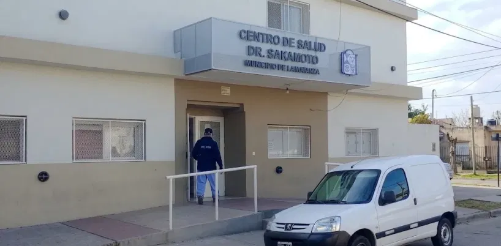
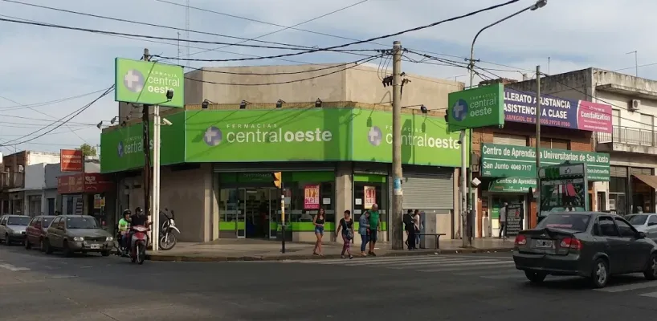
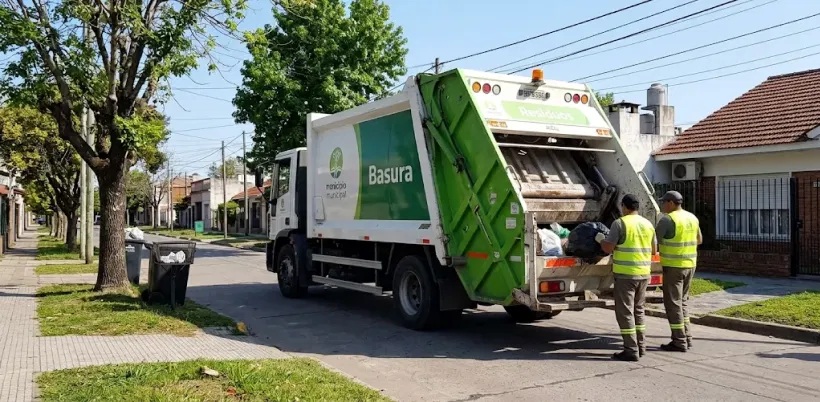
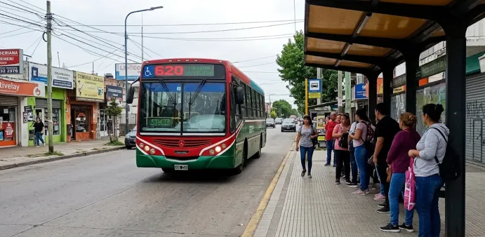
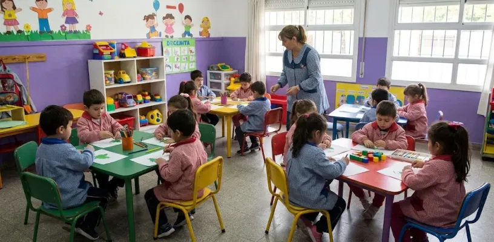

Hospitales y Centros de Atención Primaria (CAPS)
Encontrá el centro de salud más cercano a tu barrio, hospitales municipales y salitas de atención con sus horarios y especialidades.
Ver información →Todo lo que necesitás saber de tu día a día en el Portal Ciudadano.

Encontrá el centro de salud más cercano a tu barrio, hospitales municipales y salitas de atención con sus horarios y especialidades.
Ver información →
Consultá el listado actualizado diariamente con las farmacias que están de guardia en cada localidad del municipio.
Ver información →
Conocé los días y horarios del servicio de recolección en tu zona y ubicá los Puntos Verdes para llevar materiales reciclables.
Ver información →
Información sobre líneas de colectivos locales, paradas, terminales SUBE y el estado del tránsito con cortes por obras en tiempo real.
Ver información →
Buscá vacantes en los Jardines de Infantes Municipales, inscribite a talleres gratuitos y participá de las actividades culturales abiertas.
Ver información →Directorio de teléfonos de asistencia (como el 147), delegaciones municipales y canales para reportar problemas de servicios públicos.
Ver información →